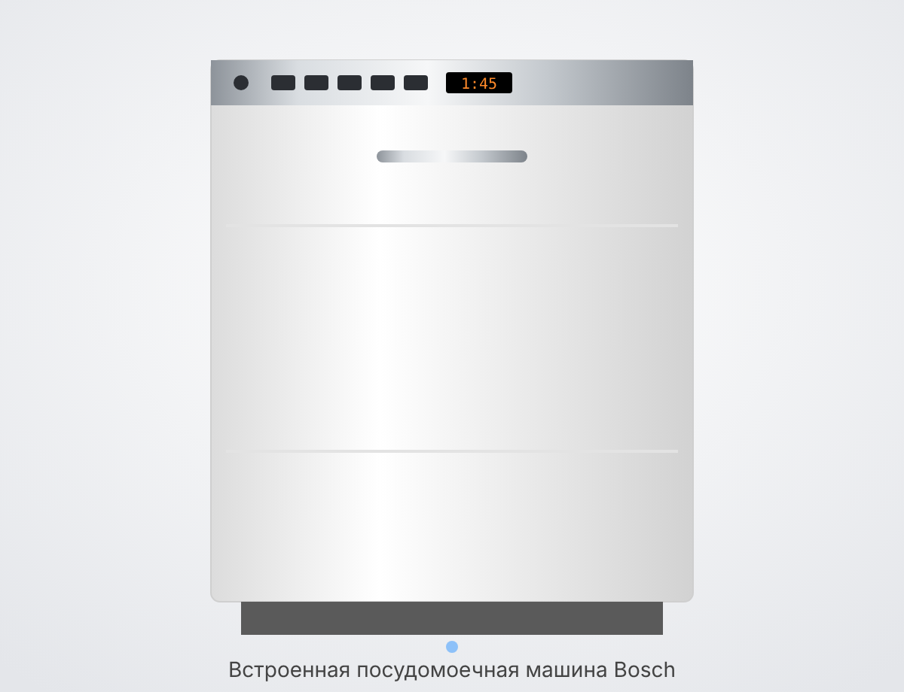
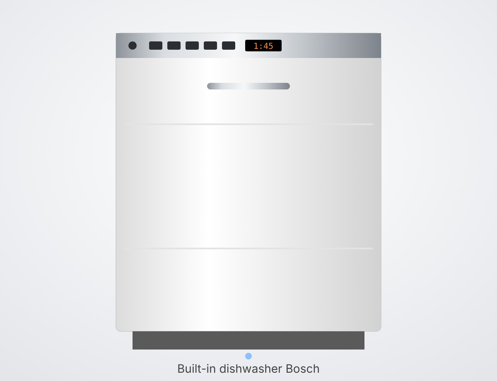
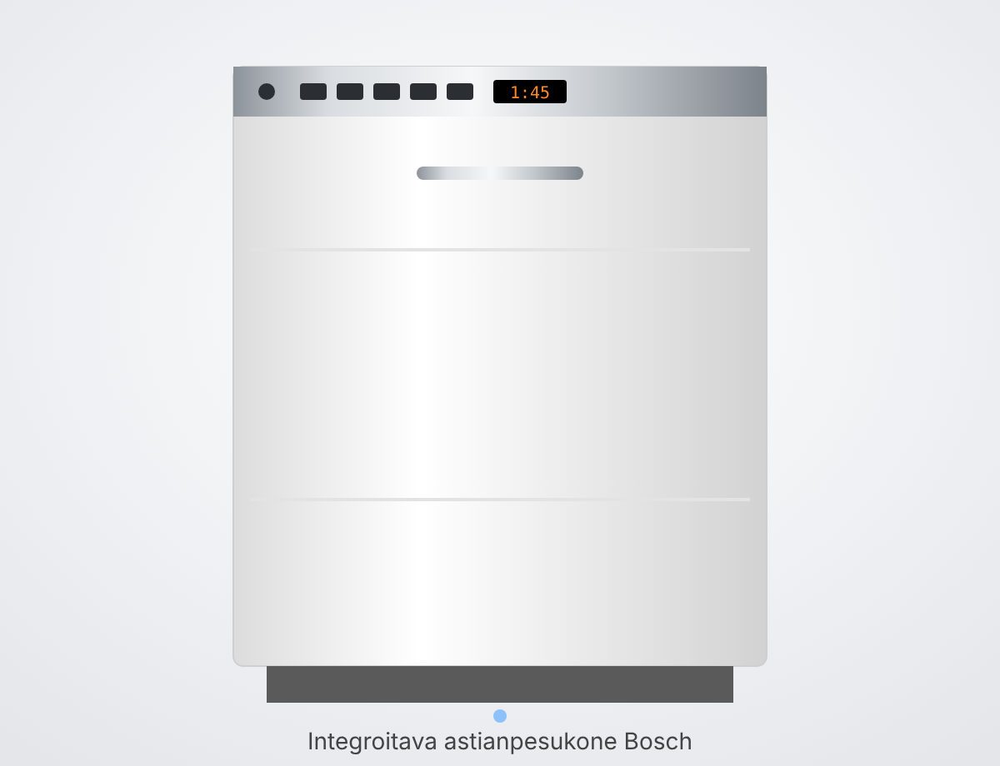

Dishwasher · Astianpesukone · полностью встраиваемая, 2015–2016; точная модель не указана
📖 Полная инструкция Bosch для этой серии (PDF, на английском)
Панель — на верхнем торце дверцы, видна, когда дверца открыта. Схема из инструкции (у нашей машины 6 кнопок программ и 3 кнопки доп. функций):
Слева направо на нашей машине: Вкл/выкл → программы: Интенсивная 70°, Авто 45–65°, Эко 50°, Бокалы 40°, Быстрая 45°, Предварительное ополаскивание → дисплей → «−» и «+» (отложенный старт) → VarioSpeed → IntensiveZone → третья доп. функция (значок бокала со звёздочкой — сушка с блеском / ExtraDry) → Start.
Значки на дисплее: кран — «проверьте подачу воды», значок соли — пора досыпать соль, звёздочка — пора долить ополаскиватель.
Сверху вниз: верхняя корзина, верхний разбрызгиватель, лоток для таблетки, нижний разбрызгиватель, отсек для соли (на дне), фильтры, корзинка для приборов, нижняя корзина. На дверце — дозатор ополаскивателя и отсек для моющего средства.
При включении машина сама выбирает Эко 50° — самую экономичную программу для обычной посуды.
Доп. функцию нажимают после выбора программы, до кнопки Start. Не каждая функция работает с каждой программой.
1. Полностью открыть кран подачи воды (если его закрывали).
2. Загрузить посуду, положить средство (раздел 7), закрыть дозатор.
3. Нажать Вкл/выкл. Выбрать программу. При желании — доп. функцию (VarioSpeed, IntensiveZone…).
4. Нажать Start и закрыть дверцу. На дисплее — оставшееся время.
До 24 часов, шаг 1 час: нажимать «+», пока на дисплее не появится h:01, h:02… Затем Start. Отменить: «−» до h:00.
• Пауза: выключить кнопкой Вкл/выкл — программа запомнится; включить снова — продолжит. Если машина горячая, дверцу сначала приоткрыть на несколько минут.
• Отмена (сброс): открыть дверцу, держать Start около 3 секунд, пока на дисплее не появится 0:01, закрыть дверцу. Примерно через минуту — 0:00, машина откачала воду. Выключить.
• После нажатия Start программу поменять нельзя — только сбросить и выбрать заново.
На дисплее 0:00, звучит сигнал. Выключить машину, дать посуде остыть 15–30 минут — так она лучше досохнет. Разгружать сначала нижнюю корзину, потом верхнюю (чтобы капли сверху не попали на сухое).
1. Крупные остатки еды выбросить. Под краном заранее мыть не нужно.
2. Ставить устойчиво, отверстиями вниз, выпуклую посуду — наклонно, чтобы вода стекала.
3. Проверить, что разбрызгиватели свободно крутятся.
Верхняя корзина — чашки, стаканы, мелкие тарелки, пластик:
Нижняя корзина — тарелки, кастрюли, сковороды:
Приборы — в корзинку ручками вниз (или в лоток для приборов сверху, если он есть):
Складные держатели в корзинах опускаются, чтобы поместились кастрюли и большие миски:
Откидная полочка в верхней корзине — для чашек и длинных предметов; высоту можно переставить:
1. Выдвинуть верхнюю корзину, держать за края сверху.
2. Опустить: нажать рычажки слева и справа снаружи корзины. Поднять: потянуть корзину за края вверх.
3. Проверить, что обе стороны на одной высоте, задвинуть корзину.
Не моются в машине: дерево, хрупкое декоративное стекло и антиквариат, нетермостойкий пластик, медь и олово, вещи в воске, саже, масле или чернилах. Алюминий и серебро могут потемнеть.
Соль смягчает воду — без неё на посуде и в машине налёт. Досыпать, когда на дисплее загорится значок соли, и лучше сразу перед запуском мойки.
1. Вынуть нижнюю корзину, открутить крышку отсека соли на дне.
2. Только в первый раз — налить в отсек воды до верха.
3. Насыпать специальную соль для посудомоек (через воронку), пока отсек не заполнится. Вода вытесняется — это нормально.
4. Плотно закрутить крышку, стереть рассыпанную соль.
⚠ Только специальная соль для посудомоек! Не кухонная соль и не таблетки. Моющее средство в отсек соли — НИКОГДА: оно испортит умягчитель.
Жёсткость воды узнать у водоканала, найти в таблице значение H:xx:
1. Включить машину. Держать 4-ю кнопку программ (A) и нажимать Start, пока на дисплее не появится H:0…, отпустить.
2. Кнопкой C (6-я кнопка программ) менять значение — каждый раз на одну ступень (после H:07 снова H:00).
3. Нажать Start — настройка сохранена. Заводская — H:04.
Если пользуетесь таблетками 3 в 1 и вода не жёстче 21 °dH, можно поставить H:00 — соль не нужна, значок погаснет.
Даёт посуду без пятен и прозрачные стёкла. Когда загорелся значок — осталось на 1–2 мойки, пора долить.
1. Открыть дозатор на дверце: нажать на язычок крышки и поднять.
2. Налить ополаскиватель до отметки max.
3. Закрыть крышку до щелчка. Пролитое вытереть тряпкой — иначе будет много пены.
Заводская r:05 — хорошая сушка. Полосы на стекле — уменьшить; капли и пятна — увеличить. Настройка как у соли: держать A + Start до H:0…, кнопкой A листать до r:0…, кнопкой C менять, Start — сохранить.
1. Если крышка отсека закрыта — нажать защёлку, она откроется.
2. Положить таблетку плашмя (не ребром) или насыпать порошок/гель: обычно 20–25 мл, по меткам 15/25/50 мл.
3. Закрыть крышку до щелчка. Она откроется сама в нужный момент программы.
• Таблетки 3 в 1, 4 в 1 работают при жёсткости воды до 21 °dH; если вода жёстче — всё равно досыпать соль и ополаскиватель.
• В быстрой программе таблетка может не успеть раствориться — лучше порошок.
• Ничего не ставить над лотком для таблетки в верхней корзине — крышка отсека не откроется.
⚠ Никогда не использовать средство для мытья посуды руками — будет много пены и протечка.
Фильтры на дне задерживают крупный мусор. Проверять после каждой мойки, мыть хотя бы раз в неделю–две.
1. Вынуть нижнюю корзину.
2. Повернуть цилиндр фильтра против часовой стрелки и вынуть всю систему фильтров.
3. Разобрать (крупный, плоский и микрофильтр), промыть под струёй воды, остатки снять щёткой.
4. Собрать и вставить обратно, повернуть по часовой до упора: стрелки должны стоять друг напротив друга.
Если отверстия забиты накипью или остатками еды, посуда моется хуже.
1. Верхний разбрызгиватель открутить (1) и снять вниз (2).
2. Нижний разбрызгиватель снять вверх.
3. Промыть под струёй, отверстия прочистить зубочисткой.
4. Поставить обратно до щелчка / закрутить, проверить, что крутятся свободно.
• Уплотнитель дверцы регулярно протирать влажной тряпкой с каплей средства для посуды.
• Фасад и панель — мягкой влажной тряпкой; без абразивов и жёстких губок (поцарапают). На нержавейке не использовать новые губки-салфетки, пока их несколько раз не прополоскали.
• Налёт внутри: средство в дозатор, самая горячая программа (Интенсивная 70°) без посуды. Раз в 1–2 месяца — специальное средство для чистки посудомоек, программа без посуды.
• Если машина долго не используется — оставить дверцу приоткрытой, чтобы не было запаха.
1. Выключить машину из розетки. Вынуть корзины и фильтры.
2. Вычерпать воду (губкой).
3. Поддеть крышку насоса ложкой, взять за перемычку и снять наклонно внутрь.
4. Проверить крыльчатку, убрать осколки и мусор (осторожно — острое!).
5. Поставить крышку на место и нажать до щелчка. Вставить фильтры и корзины.
Сначала: сбросить программу (держать Start 3 секунды) или выключить машину и через некоторое время включить снова.
• Горит кран «проверьте подачу воды» → шланг перегнут, кран закрыт или фильтр на входе шланга засорён. Открыть кран, расправить шланг.
• E:07 → отверстие на правой стенке внутри закрыто посудой. Переставить посуду.
• E:12 → нагреватель в накипи. Прогнать средство от накипи/для чистки машины; проверить соль и настройку жёсткости.
• E:14, E:15, E:16 → сработала защита от протечки или вода поступает постоянно. Закрыть кран, вызвать сервис, назвать код.
• E:22 → забиты фильтры. Почистить фильтры (раздел 8).
• E:24 → сливной шланг перегнут или засорён, заглушка на сифоне не снята, крышка насоса не на месте.
• E:25 → засорён сливной насос или не защёлкнута его крышка. Почистить насос (раздел 10).
• E:27 → низкое напряжение в сети. Это не неисправность машины.
• Другой код E:xx → выключить, через минуту включить. Повторяется — закрыть кран, вынуть вилку, вызвать сервис и назвать код.
• Посуда мокрая → нет ополаскивателя; выбрана программа без сушки; посуда стоит ровно, вода стоит в углублениях; рано достали — подождать 30 минут после конца. Пластик всегда сохнет хуже.
• Остатки еды на посуде → посуда стоит слишком плотно, разбрызгиватель не крутится или засорён, грязные фильтры, слишком слабая программа (взять Эко 50° или Интенсивную).
• Средство не растворилось → крышку дозатора загородила посуда; таблетка стоит ребром; таблетка в быстрой программе.
• Белый налёт → мало соли или неверная жёсткость (раздел 5); не закрыта крышка отсека соли; мало средства.
• Полосы на стёклах → слишком много ополаскивателя (уменьшить r:xx). Пятна от капель → мало ополаскивателя (рекомендуется 4–5).
• Помутнение стекла, которое не отмывается → стекло не для посудомойки; мыть при более низкой температуре, средство с защитой стекла.
• Внутри после мойки влажно — нормально: машина сушит конденсацией.
• Вода осталась на дне → забиты фильтры или насос (разделы 8 и 10), или программа ещё не закончилась.
• Средство для мытья посуды руками — только средства для посудомоек.
• Кухонная соль и моющее средство в отсек для соли.
• Хлорсодержащие средства.
• Пароочиститель для чистки машины.
• Абразивные губки и порошки на фасаде и панели.
• Мыть дерево, медь, олово, хрупкий декор, нетермостойкий пластик.
• Садиться или вставать на открытую дверцу.
• Открывать дверцу сразу после горячей программы — горячий пар может повредить мебель; подождать.
• Ремонтировать самому и ставить неоригинальные запчасти.
Составлено по инструкции производителя. Обновлено: 18.10.2026.

Dishwasher · Astianpesukone · fully integrated, 2015–2016; exact model not specified 📄 Full Bosch manual for this series (PDF, in English): https://drive.google.com/file/d/1zwtQ4qTjtAcigi8IVnUJ76J5ECCOAUiq/view
The panel is on the top edge of the door and is visible when the door is open. Diagram from the manual (our machine has 6 programme buttons and 3 extra-function buttons): From left to right on our machine: On/Off → programmes: Intensive 70°, Auto 45–65°, Eco 50°, Glass 40°, Quick 45°, Pre-rinse → display → “−” and “+” (delayed start) → VarioSpeed → IntensiveZone → third extra function (glass-with-a-star symbol — shine drying / ExtraDry) → Start. Display symbols: tap — “check water supply”, salt symbol — time to refill salt, star — time to top up rinse aid.
From top to bottom: upper basket, upper spray arm, tablet tray, lower spray arm, salt container (on the floor), filters, cutlery basket, lower basket. On the door — rinse aid dispenser and detergent compartment.
When switched on, the machine automatically selects Eco 50° — the most economical programme for normally soiled dishes. Press an extra function after selecting the programme and before pressing Start. Not every function works with every programme.
1. Turn the water tap fully on (if it was turned off). 2. Load the dishes, add detergent (section 7), close the dispenser. 3. Press On/Off. Select a programme. If you wish, an extra function (VarioSpeed, IntensiveZone…). 4. Press Start and close the door. The display shows the remaining time.
Up to 24 hours in 1-hour steps: press “+” until the display shows h:01, h:02… Then Start. To cancel: “−” down to h:00.
• Pause: switch off with the On/Off button — the programme is remembered; switch on again and it continues. If the machine is hot, first open the door slightly for a few minutes. • Cancel (reset): open the door, hold Start for about 3 seconds until the display shows 0:01, close the door. After about a minute — 0:00, the machine has pumped out the water. Switch off. • Once Start has been pressed, the programme cannot be changed — only reset and selected again.
The display shows 0:00 and a signal sounds. Switch the machine off and let the dishes cool for 15–30 minutes — this helps them dry better. Unload the lower basket first, then the upper one (so drips from above do not fall on dry items).
1. Scrape off large food remains. There is no need to pre-rinse under the tap. 2. Place items securely, openings facing down; curved items at an angle so the water runs off. 3. Check that the spray arms can rotate freely. Upper basket — cups, glasses, small plates, plastic: Lower basket — plates, pots, pans: Cutlery — in the basket handles down (or in the cutlery tray at the top, if there is one): The fold-down racks in the baskets can be lowered to make room for pots and large bowls: The fold-down shelf in the upper basket is for cups and long items; its height can be adjusted:
1. Pull out the upper basket, holding it by the top edges. 2. To lower: press the levers on the left and right outside of the basket. To raise: pull the basket up by its edges. 3. Check that both sides are at the same height and push the basket in. Not dishwasher-safe: wood, fragile decorative glass and antiques, non-heat-resistant plastic, copper and tin, items soiled with wax, soot, oil or ink. Aluminium and silver may discolour.
Salt softens the water — without it, deposits form on the dishes and in the machine. Refill when the salt symbol lights up on the display, preferably just before starting a wash. 1. Remove the lower basket and unscrew the cap of the salt container on the floor. 2. First time only — fill the container to the top with water. 3. Pour in special dishwasher salt (using the funnel) until the container is full. Water is displaced — this is normal. 4. Screw the cap on tightly and wipe away any spilled salt. ⚠ Only special dishwasher salt! Not table salt and not tablets. NEVER put detergent in the salt container: it will ruin the water softener.
Find out your water hardness from the water utility and look up the H:xx value in the table: 1. Switch the machine on. Hold the 4th programme button (A) and press Start until the display shows H:0…, then release. 2. Use button C (the 6th programme button) to change the value — one step each press (after H:07 it returns to H:00). 3. Press Start — the setting is saved. Factory setting — H:04. If you use 3-in-1 tablets and your water is no harder than 21 °dH, you can set H:00 — no salt is needed and the symbol goes out.
Gives spot-free dishes and clear glasses. When the symbol lights up, there is enough for 1–2 more washes — time to top up. 1. Open the dispenser on the door: press the tab on the lid and lift. 2. Fill with rinse aid up to the max mark. 3. Close the lid until it clicks. Wipe up any spills with a cloth — otherwise there will be a lot of foam.
Factory setting r:05 — good drying. Streaks on glass — reduce; drops and spots — increase. Set it the same way as the salt: hold A + Start until H:0…, scroll with button A to r:0…, change with button C, Start — save.
1. If the compartment lid is closed, press the catch and it will open. 2. Place the tablet flat (not on its edge) or pour in powder/gel: usually 20–25 ml, using the 15/25/50 ml marks. 3. Close the lid until it clicks. It opens by itself at the right point in the programme. • 3-in-1 and 4-in-1 tablets work with water hardness up to 21 °dH; if your water is harder, still add salt and rinse aid. • In the quick programme a tablet may not have time to dissolve — powder is better. • Do not place anything above the tablet tray in the upper basket — the compartment lid will not open. ⚠ Never use hand dishwashing liquid — it causes a lot of foam and leaks.
The filters on the floor catch coarse debris. Check them after every wash and clean them at least every one to two weeks. 1. Remove the lower basket. 2. Turn the filter cylinder anticlockwise and lift out the whole filter system. 3. Take it apart (coarse filter, flat filter and microfilter), rinse under running water and remove remaining dirt with a brush. 4. Reassemble and put it back, turning clockwise as far as it goes: the arrows must line up opposite each other.
If the holes are clogged with limescale or food remains, the dishes are cleaned less well. 1. Unscrew the upper spray arm (1) and pull it off downwards (2). 2. Pull the lower spray arm off upwards. 3. Rinse under running water and clear the holes with a toothpick. 4. Refit until it clicks / screw back on and check that they rotate freely.
• Wipe the door seal regularly with a damp cloth and a drop of washing-up liquid. • Front and panel — with a soft damp cloth; no abrasives or hard sponges (they scratch). On stainless steel, do not use new sponge cloths until they have been rinsed several times. • Deposits inside: detergent in the dispenser, run the hottest programme (Intensive 70°) without dishes. Every 1–2 months — a special dishwasher cleaner, programme without dishes. • If the machine will not be used for a long time, leave the door ajar to prevent odours.
1. Unplug the machine. Remove the baskets and filters. 2. Scoop out the water (with a sponge). 3. Lever up the pump cover with a spoon, grip it by the crosspiece and remove it at an angle inwards. 4. Check the impeller and remove any broken glass and debris (careful — sharp!). 5. Put the cover back and press until it clicks. Refit the filters and baskets.
First: reset the programme (hold Start for 3 seconds) or switch the machine off and on again after a while.
• Tap “check water supply” is lit → hose kinked, tap closed or the filter at the hose inlet is blocked. Open the tap, straighten the hose. • E:07 → the opening on the right-hand inner wall is blocked by dishes. Rearrange the dishes. • E:12 → heater is scaled up. Run a descaler/machine cleaner; check the salt and the hardness setting. • E:14, E:15, E:16 → the leak protection has triggered or water is flowing in constantly. Close the tap, call the service centre and give the code. • E:22 → filters are clogged. Clean the filters (section 8). • E:24 → drain hose kinked or blocked, the cap on the sink trap not removed, pump cover not in place. • E:25 → drain pump blocked or its cover not clicked into place. Clean the pump (section 10). • E:27 → low mains voltage. This is not a fault of the machine. • Another E:xx code → switch off, switch on again after a minute. If it recurs — close the tap, pull out the plug, call the service centre and give the code.
• Dishes are wet → no rinse aid; a programme without drying was selected; dishes placed flat so water collects in hollows; taken out too early — wait 30 minutes after the end. Plastic always dries less well. • Food remains on dishes → dishes packed too tightly, spray arm not rotating or clogged, dirty filters, programme too weak (choose Eco 50° or Intensive). • Detergent not dissolved → dispenser lid blocked by dishes; tablet on its edge; tablet used in the quick programme. • White deposits → too little salt or wrong hardness setting (section 5); salt container cap not closed; too little detergent. • Streaks on glasses → too much rinse aid (reduce r:xx). Water spots → too little rinse aid (4–5 recommended). • Clouding on glass that will not wash off → glass not dishwasher-safe; wash at a lower temperature, use detergent with glass protection. • Damp inside after washing — normal: the machine uses condensation drying. • Water left in the bottom → filters or pump clogged (sections 8 and 10), or the programme has not finished yet.
• Hand dishwashing liquid — only dishwasher detergents. • Table salt or detergent in the salt container. • Chlorine-based products. • A steam cleaner to clean the machine. • Abrasive sponges and scouring powders on the front and panel. • Washing wood, copper, tin, fragile decorative items, non-heat-resistant plastic. • Sitting or standing on the open door. • Opening the door right after a hot programme — hot steam can damage the furniture; wait. • Repairing it yourself or fitting non-original spare parts. Compiled from the manufacturer's manual. Updated: 18.10.2026.

Dishwasher · Astianpesukone · täysin integroitava, 2015–2016; tarkkaa mallia ei ole merkitty 📄 Tämän sarjan täydellinen Bosch-käyttöohje (PDF, englanniksi): https://drive.google.com/file/d/1zwtQ4qTjtAcigi8IVnUJ76J5ECCOAUiq/view
Paneeli on oven yläreunassa ja näkyy, kun ovi on auki. Kaavio käyttöohjeesta (meidän koneessamme on 6 ohjelmapainiketta ja 3 lisätoimintopainiketta): Vasemmalta oikealle meidän koneessamme: Päälle/pois → ohjelmat: Intensiivinen 70°, Auto 45–65°, Eco 50°, Lasi 40°, Pika 45°, Esihuuhtelu → näyttö → ”−” ja ”+” (ajastettu käynnistys) → VarioSpeed → IntensiveZone → kolmas lisätoiminto (lasi ja tähti -symboli — kiiltokuivaus / ExtraDry) → Start. Näytön symbolit: hana — ”tarkista vedentulo”, suolasymboli — lisää suolaa, tähti — lisää huuhtelukirkastetta.
Ylhäältä alas: yläkori, ylempi suihkuvarsi, tablettiteline, alempi suihkuvarsi, suolasäiliö (pohjalla), suodattimet, aterinkori, alakori. Ovessa — huuhtelukirkastelokero ja pesuainelokero.
Kun kone kytketään päälle, se valitsee itse Eco 50° -ohjelman — taloudellisimman ohjelman tavallisille astioille. Lisätoiminto valitaan ohjelman valinnan jälkeen, ennen Start-painiketta. Kaikki toiminnot eivät toimi kaikkien ohjelmien kanssa.
1. Avaa vesihana kokonaan (jos se on suljettu). 2. Lataa astiat, lisää pesuaine (kohta 7), sulje lokero. 3. Paina Päälle/pois. Valitse ohjelma. Halutessasi lisätoiminto (VarioSpeed, IntensiveZone…). 4. Paina Start ja sulje ovi. Näytössä näkyy jäljellä oleva aika.
Enintään 24 tuntia, tunnin välein: paina ”+”, kunnes näyttöön tulee h:01, h:02… Sitten Start. Peruutus: ”−” kunnes näytössä on h:00.
• Tauko: sammuta Päälle/pois-painikkeella — ohjelma jää muistiin; kun kytket koneen uudelleen päälle, se jatkaa. Jos kone on kuuma, raota ensin ovea muutamaksi minuutiksi. • Peruutus (nollaus): avaa ovi, pidä Start-painiketta painettuna noin 3 sekuntia, kunnes näyttöön tulee 0:01, sulje ovi. Noin minuutin kuluttua näytössä on 0:00 ja kone on pumpannut veden pois. Sammuta kone. • Kun Start on painettu, ohjelmaa ei voi vaihtaa — sen voi vain nollata ja valita uudelleen.
Näytössä on 0:00 ja kuuluu merkkiääni. Sammuta kone ja anna astioiden jäähtyä 15–30 minuuttia — silloin ne kuivuvat paremmin. Tyhjennä ensin alakori, sitten yläkori (jotta ylhäältä valuvat pisarat eivät putoa kuivien astioiden päälle).
1. Poista suuret ruoantähteet. Astioita ei tarvitse esihuuhdella hanan alla. 2. Aseta astiat tukevasti aukot alaspäin, kuperat astiat vinoon, jotta vesi valuu pois. 3. Tarkista, että suihkuvarret pääsevät pyörimään vapaasti. Yläkori — kupit, lasit, pienet lautaset, muovit: Alakori — lautaset, kattilat, paistinpannut: Aterimet — aterinkoriin kahvat alaspäin (tai yläosan aterinlaatikkoon, jos sellainen on): Korien kaadettavat piikkirivit saa laskettua alas, jotta kattilat ja suuret kulhot mahtuvat: Yläkorin kääntöhylly on kupeille ja pitkille esineille; sen korkeutta voi säätää:
1. Vedä yläkori ulos ja pidä kiinni sen yläreunoista. 2. Laskeminen: paina korin ulkopuolella vasemmalla ja oikealla olevia vipuja. Nostaminen: vedä koria reunoista ylöspäin. 3. Tarkista, että molemmat puolet ovat samalla korkeudella, ja työnnä kori sisään. Ei saa pestä koneessa: puu, hauraat koristelasit ja antiikkiesineet, kuumuutta kestämätön muovi, kupari ja tina, vahan, noen, öljyn tai musteen tahrimat esineet. Alumiini ja hopea voivat tummua.
Suola pehmentää vettä — ilman sitä astioihin ja koneeseen muodostuu kalkkikerrostumia. Lisää suolaa, kun suolasymboli syttyy näyttöön, mieluiten juuri ennen pesun käynnistämistä. 1. Ota alakori pois ja kierrä auki pohjalla olevan suolasäiliön korkki. 2. Vain ensimmäisellä kerralla — täytä säiliö vedellä piripintaan. 3. Lisää astianpesukoneen erikoissuolaa (suppilon avulla), kunnes säiliö on täynnä. Vettä valuu ulos — se on normaalia. 4. Kierrä korkki tiukasti kiinni ja pyyhi pois läikkynyt suola. ⚠ Vain astianpesukoneen erikoissuolaa! Ei ruokasuolaa eikä tabletteja. Pesuainetta suolasäiliöön EI KOSKAAN: se pilaa vedenpehmentimen.
Kysy veden kovuus vesilaitokselta ja etsi taulukosta vastaava H:xx-arvo: 1. Kytke kone päälle. Pidä 4. ohjelmapainiketta (A) painettuna ja paina Start, kunnes näyttöön tulee H:0…, päästä irti. 2. Muuta arvoa painikkeella C (6. ohjelmapainike) — yksi porras kerrallaan (H:07:n jälkeen taas H:00). 3. Paina Start — asetus tallentuu. Tehdasasetus on H:04. Jos käytät 3 in 1 -tabletteja eikä vesi ole kovempaa kuin 21 °dH, voit asettaa H:00 — suolaa ei tarvita ja symboli sammuu.
Antaa tahrattomat astiat ja kirkkaat lasit. Kun symboli syttyy, kirkastetta riittää vielä 1–2 pesuun — lisää sitä. 1. Avaa oven kirkastelokero: paina kannen kielekettä ja nosta. 2. Kaada huuhtelukirkastetta max-merkkiin asti. 3. Sulje kansi napsahdukseen asti. Pyyhi läikkynyt kirkaste liinalla — muuten syntyy paljon vaahtoa.
Tehdasasetus r:05 — hyvä kuivaus. Raitoja laseissa — pienennä; pisaroita ja tahroja — suurenna. Säätö tehdään kuten suolan: pidä A + Start, kunnes näytössä on H:0…, selaa painikkeella A kohtaan r:0…, muuta painikkeella C, Start — tallenna.
1. Jos lokeron kansi on kiinni, paina salpaa, niin se aukeaa. 2. Aseta tabletti makuulleen (ei kyljelleen) tai annostele jauhetta/geeliä: tavallisesti 20–25 ml, merkkien 15/25/50 ml mukaan. 3. Sulje kansi napsahdukseen asti. Se aukeaa itsestään oikeassa vaiheessa ohjelmaa. • 3 in 1- ja 4 in 1 -tabletit toimivat, kun veden kovuus on enintään 21 °dH; jos vesi on kovempaa, lisää silti suolaa ja huuhtelukirkastetta. • Pikaohjelmassa tabletti ei välttämättä ehdi liueta — jauhe on parempi. • Älä aseta yläkorissa mitään tablettitelineen yläpuolelle — muuten pesuainelokeron kansi ei aukea. ⚠ Älä koskaan käytä käsitiskiainetta — syntyy paljon vaahtoa ja vuoto.
Pohjalla olevat suodattimet pidättävät karkean lian. Tarkista ne jokaisen pesun jälkeen ja pese vähintään viikon–kahden välein. 1. Ota alakori pois. 2. Käännä suodatinsylinteriä vastapäivään ja nosta koko suodatinjärjestelmä pois. 3. Pura se osiin (karkeasuodatin, tasosuodatin ja mikrosuodatin), huuhtele juoksevan veden alla ja poista jäljelle jäänyt lika harjalla. 4. Kokoa ja aseta takaisin, käännä myötäpäivään pohjaan asti: nuolten on oltava vastakkain.
Jos reiät ovat kalkin tai ruoantähteiden tukkimia, astiat puhdistuvat huonommin. 1. Kierrä ylempi suihkuvarsi irti (1) ja vedä se alas (2). 2. Vedä alempi suihkuvarsi irti ylöspäin. 3. Huuhtele juoksevan veden alla ja puhdista reiät hammastikulla. 4. Aseta takaisin napsahdukseen asti / kierrä kiinni ja tarkista, että ne pyörivät vapaasti.
• Pyyhi oven tiiviste säännöllisesti kostealla liinalla ja tipalla astianpesuainetta. • Etupaneeli ja ohjauspaneeli — pehmeällä kostealla liinalla; ei hankaavia aineita eikä karkeita sieniä (ne naarmuttavat). Älä käytä ruostumattomalla teräksellä uusia sieniliinoja, ennen kuin ne on huuhdeltu useita kertoja. • Kerrostumat sisällä: pesuainetta lokeroon ja kuumin ohjelma (Intensiivinen 70°) ilman astioita. 1–2 kuukauden välein — astianpesukoneen puhdistusainetta, ohjelma ilman astioita. • Jos kone on pitkään käyttämättä, jätä ovi raolleen, ettei synny hajua.
1. Irrota koneen pistoke pistorasiasta. Ota korit ja suodattimet pois. 2. Poista vesi (sienellä). 3. Vipua pumpun kansi irti lusikalla, tartu poikittaisesta kielekkeestä ja irrota kansi vinosti sisäänpäin. 4. Tarkista siipipyörä ja poista lasinsirut ja roskat (varovasti — teräviä!). 5. Aseta kansi paikalleen ja paina napsahdukseen asti. Aseta suodattimet ja korit takaisin.
Ensin: nollaa ohjelma (pidä Start painettuna 3 sekuntia) tai sammuta kone ja kytke se hetken kuluttua uudelleen päälle.
• Hanasymboli ”tarkista vedentulo” palaa → letku on taittunut, hana on kiinni tai letkun tulopään suodatin on tukossa. Avaa hana, suorista letku. • E:07 → sisällä oikeassa seinässä oleva aukko on astioiden peitossa. Siirrä astioita. • E:12 → lämmitysvastus on kalkkeutunut. Aja kalkinpoisto- tai koneenpuhdistusaine; tarkista suola ja kovuusasetus. • E:14, E:15, E:16 → vuotosuoja on lauennut tai vettä tulee jatkuvasti. Sulje hana, soita huoltoon ja kerro koodi. • E:22 → suodattimet ovat tukossa. Puhdista suodattimet (kohta 8). • E:24 → poistoletku on taittunut tai tukossa, viemärin liitännän tulppaa ei ole poistettu, pumpun kansi ei ole paikallaan. • E:25 → tyhjennyspumppu on tukossa tai sen kansi ei ole napsahtanut kiinni. Puhdista pumppu (kohta 10). • E:27 → verkkojännite on alhainen. Tämä ei ole koneen vika. • Muu E:xx-koodi → sammuta ja kytke minuutin kuluttua uudelleen päälle. Jos koodi toistuu — sulje hana, irrota pistoke, soita huoltoon ja kerro koodi.
• Astiat ovat märkiä → huuhtelukirkaste puuttuu; valittu ohjelma ilman kuivausta; astiat ovat vaakatasossa ja vettä jää koloihin; astiat otettu pois liian aikaisin — odota 30 minuuttia ohjelman päättymisen jälkeen. Muovi kuivuu aina huonommin. • Astioihin jää ruoantähteitä → astiat liian tiiviisti, suihkuvarsi ei pyöri tai on tukossa, suodattimet likaiset, liian kevyt ohjelma (valitse Eco 50° tai Intensiivinen). • Pesuaine ei ole liuennut → astia esti lokeron kannen aukeamisen; tabletti oli kyljellään; tabletti pikaohjelmassa. • Valkoinen kerrostuma → liian vähän suolaa tai väärä kovuusasetus (kohta 5); suolasäiliön korkki ei ole kiinni; liian vähän pesuainetta. • Raitoja laseissa → liikaa huuhtelukirkastetta (pienennä r:xx). Vesipisaroiden tahroja → liian vähän kirkastetta (suositus 4–5). • Lasin samentuma, joka ei lähde pesemällä → lasi ei kestä konepesua; pese matalammassa lämpötilassa, käytä lasia suojaavaa pesuainetta. • Kone on pesun jälkeen sisältä kostea — normaalia: kone kuivaa kondensoimalla. • Pohjalle jäi vettä → suodattimet tai pumppu tukossa (kohdat 8 ja 10) tai ohjelma ei ole vielä päättynyt.
• Käsitiskiaine — vain astianpesukoneen pesuaineita. • Ruokasuolaa tai pesuainetta suolasäiliöön. • Klooripitoisia aineita. • Höyrypesuria koneen puhdistukseen. • Hankaavia sieniä ja jauheita etupaneeliin ja ohjauspaneeliin. • Puun, kuparin, tinan, hauraiden koriste-esineiden ja kuumuutta kestämättömän muovin pesu. • Avoimen oven päälle istuminen tai seisominen. • Oven avaaminen heti kuuman ohjelman jälkeen — kuuma höyry voi vahingoittaa kalusteita; odota. • Itse korjaaminen ja muiden kuin alkuperäisten varaosien käyttö. Laadittu valmistajan käyttöohjeen pohjalta. Päivitetty: 18.10.2026.